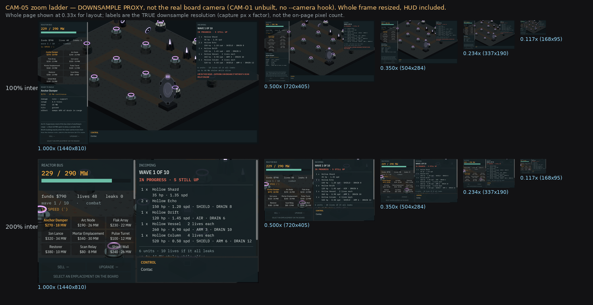

The board you cannot fit on a screen
anchor-24's board draws 2,112 px wide against a 940 px strip between the two instrument panels — and 4 px at 200% interface scale. Fixing that needed a camera, and the camera needed an answer nobody could measure their way out of: how much detail is allowed to disappear when the whole board finally fits.
anchor-24's board draws 2,112 px wide against a 940 px strip between the two instrument panels at 100% interface scale — and 4 px at 200%. The panels do not crowd the board at that scale; they erase it. Fixing that needed a camera, and the camera needed an answer to a question nobody could measure their way out of: how much detail is allowed to disappear when the whole board finally fits on screen?
Three transforms, kept separate
The board could not simply be scaled. The sky backdrop sized itself to the raw viewport and was a child of the board's own node, so zooming the board would have stretched the sky and torn the full-bleed gradient off the screen edges. The backdrop moved to be a sibling instead, which freed the board's own scale for zoom and a separate origin term for pan, while position stayed reserved for screen shake — three transform terms, three separate jobs, verified pixel-identical before and after across four interface-scale and anchor combinations, then confirmed live by nudging the board's scale at runtime and watching the sky stay full-bleed and unmoved.
ZOOM_MIN is derived, not authored: it fits whatever board is loaded into the visible strip, recomputed on load, so it is already correct for a board nobody has built yet. Pan is a middle-drag rather than a left-drag, because left click already arms builds and selects emplacements. Verified as frames and numbers rather than argued: mouse picking resolved to the exact predicted tile at zoom 0.5, wheel-zoom held the point under the cursor to within 0.3 px, and the HUD's own accessibility report differed in 0 of 36 items between zoom 1.0 and the new zoom floor — the thing most likely to have broken quietly, since the type ladder and palette were solved for contrast at one known size.
The legibility question, measured rather than argued


Decision 056: zoom-out buys the whole board, not detail
Three options were costed: raise the tile size project-wide; float the zoom minimum and let a minimap carry the wide read; or re-author the sprite library silhouette-first so it survives 30 px. The owner's answer settled it: they would be excited if an item stayed legible zoomed all the way out, but would not be upset if a lot of detail were lost at that distance. So the zoom floor fits the board, not the sprite, and a minimap — a separate entry later in this journal — carries the wide read instead.
That killed both of the expensive options outright. Raising the tile size touches every screen-space calculation in the project, the measured sprite pivot, the atlas packer's fixed cell, the render pipeline's orthographic-scale formula, and the accessibility baselines sampled from the composited frame — and it was blocked behind the calibrate() convergence defect from the previous entry besides. Re-authoring the library silhouette-first would have spent the art budget at the zoom level where the player is reading lane pressure, not identifying unit types. It also settled a second open question for free: board size is no longer constrained by what the art can show at full zoom-out, so it can be chosen on gameplay and performance grounds alone.
Commits
7180e6frefactor(view): the backdrop stops being a child of the boarded0193efeat(view): a board camera — pan, zoom, edge-scroll, cursor-followa3df269docs: measure the legibility floor instead of arguing about itd890522docs: record decision 056 — zoom-out buys the whole board, not detail